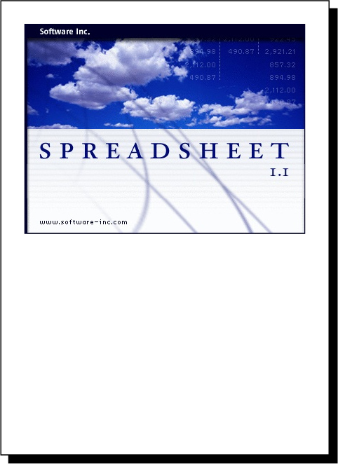
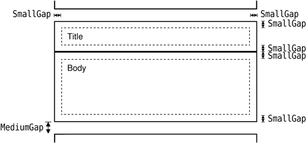
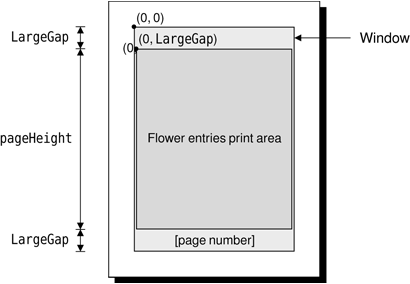

Printing in Qt is similar to drawing on a QWidget, QPixmap, or QImage. It consists of the following steps:
1. | Create a QPrinter to serve as the paint device. |
2. | Pop up a QPrintDialog, allowing the user to choose a printer and to set a few options. |
3. | Create a QPainter to operate on the QPrinter. |
4. | |
5. | |
6. |
On Windows and Mac OS X, QPrinter uses the system's printer drivers. On Unix, it generates PostScript and sends it to lp or lpr (or to the program set using QPrinter::setPrintProgram()). QPrinter can also be used to generate PDF files by calling setOutputFormat(QPrinter::PdfFormat).[*]
[*] Qt 4.4 is expected to introduce classes for showing print previews.
Let's start with some simple examples that print on a single page. The first example, illustrated in Figure 8.18, prints a QImage:
void PrintWindow::printImage(const QImage &image)
{
QPrintDialog printDialog(&printer, this);
if (printDialog.exec()) {
QPainter painter(&printer);
QRect rect = painter.viewport();
QSize size = image.size();
size.scale(rect.size(), Qt::KeepAspectRatio);
painter.setViewport(rect.x(), rect.y(),
size.width(), size.height());
painter.setWindow(image.rect());
painter.drawImage(0, 0, image);
}
}
We assume that the PrintWindow class has a member variable called printer of type QPrinter. We could simply have created the QPrinter on the stack in printImage(), but then it would not remember the user's settings from one print run to another.
We create a QPrintDialog and call exec() to show it. It returns true if the user clicked the OK button; otherwise, it returns false. After the call to exec(), the QPrinter object is ready to use. (It is also possible to print without using a QPrintDialog, by directly calling QPrinter member functions to set things up.)
Next, we create a QPainter to draw on the QPrinter. We set the window to the image's rectangle and the viewport to a rectangle with the same aspect ratio, and we draw the image at position (0, 0).
By default, QPainter's window is initialized so that the printer appears to have a similar resolution as the screen (usually somewhere between 72 and 100 dots per inch), making it easy to reuse widget painting code for printing. Here, it doesn't matter, because we set our own window.
In the example, we chose to print an image, but printing graphics view scenes is also very simple. To print the entire scene, we can call either QGraphicsScene::render() or QGraphicsView::render(), passing a QPrinter as the first parameter. If we want to print just part of the scene, we can use the render() functions' optional arguments to specify the target rectangle to paint on (where on the page the scene should be painted) and the source rectangle (what part of the scene should be painted).
Printing items that take up no more than a single page is simple, but many applications need to print multiple pages. For those, we need to paint one page at a time and call newPage() to advance to the next page. This raises the problem of determining how much information we can print on each page. There are two main approaches to handling multi-page documents with Qt:
We will review both approaches in turn. As an example, we will print a flower guide: a list of flower names, each with a textual description. Each entry in the guide is stored as a string of the format "name: description", for example:
Miltonopsis santanae: A most dangerous orchid species.
Since each flower's data is represented by a single string, we can represent all the flowers in the guide using one QStringList. Here's the function that prints a flower guide using Qt's rich text engine:
void PrintWindow::printFlowerGuide(const QStringList &entries)
{
QString html;
foreach (QString entry, entries) {
QStringList fields = entry.split(": ");
QString title = Qt::escape(fields[0]);
QString body = Qt::escape(fields[1]);
html += "<table width=\"100%\" border=1 cellspacing=0>\n"
"<tr><td bgcolor=\"lightgray\"><font size=\"+1\">"
"<b><i>" + title + "</i></b></font>\n<tr><td>" + body
+ "\n</table>\n<br>\n";
}
printHtml(html);
}The first step is to convert the QStringList into HTML. Each flower becomes an HTML table with two cells. We use Qt::escape() to replace the special characters '&', '<', and '>' with the corresponding HTML entities ("&", "<", and ">"). Then we call printHtml() to print the text.
void PrintWindow::printHtml(const QString &html)
{
QPrintDialog printDialog(&printer, this);
if (printDialog.exec()) {
QTextDocument textDocument;
textDocument.setHtml(html);
textDocument.print(&printer);
}
}The printHtml() function pops up a QPrintDialog and takes care of printing an HTML document. It can be reused "as is" in any Qt application to print arbitrary HTML pages. The resulting pages are shown in Figure 8.19.
Converting a document to HTML and using QTextDocument to print it is by far the most convenient alternative for printing reports and other complex documents. In cases where we need more control, we can do the page layout and the drawing by hand. Let's now see how we can use this approach to print a flower guide. Here's the new printFlowerGuide() function:
void PrintWindow::printFlowerGuide(const QStringList &entries)
{
QPrintDialog printDialog(&printer, this);
if (printDialog.exec()) {
QPainter painter(&printer);
QList<QStringList> pages;
paginate(&painter, &pages, entries);
printPages(&painter, pages);
}
}After setting up the printer and constructing the painter, we call the paginate() helper function to determine which entry should appear on which page. The result of this is a list of QStringLists, with each QStringList holding the entries for one page. We pass on that result to printPages().
For example, let's suppose that the flower guide contains six entries, which we will refer to as A, B, C, D, E, and F . Now let's suppose that there is room for A and B on the first page; C, D, and E on the second page; and F on the third page. The pages list would then have the list [A, B] at index position 0, the list [C, D, E] at index position 1, and the list [F ] at index position 2.
void PrintWindow::paginate(QPainter *painter, QList<QStringList> *pages,
const QStringList &entries)
{
QStringList currentPage;
int pageHeight = painter->window().height() - 2 * LargeGap;
int y = 0;
foreach (QString entry, entries) {
int height = entryHeight(painter, entry);
if (y + height > pageHeight && !currentPage.empty()) {
pages->append(currentPage);
currentPage.clear();
y = 0;
}
currentPage.append(entry);
y += height + MediumGap;
}
if (!currentPage.empty())
pages->append(currentPage);
}The paginate() function distributes the flower guide entries into pages. It relies on the entryHeight() function, which computes the height of one entry. It also takes into account the vertical gaps at the top and bottom of the page, of size LargeGap.
We iterate through the entries and append them to the current page until we come to an entry that doesn't fit; then we append the current page to the pages list and start a new page.
int PrintWindow::entryHeight(QPainter *painter, const QString &entry)
{
QStringList fields = entry.split(": ");
QString title = fields[0];
QString body = fields[1];
int textWidth = painter->window().width() - 2 * SmallGap;
int maxHeight = painter->window().height();
painter->setFont(titleFont);
QRect titleRect = painter->boundingRect(0, 0, textWidth, maxHeight,
Qt::TextWordWrap, title);
painter->setFont(bodyFont);
QRect bodyRect = painter->boundingRect(0, 0, textWidth, maxHeight,
Qt::TextWordWrap, body);
return titleRect.height() + bodyRect.height() + 4 * SmallGap;
}The entryHeight() function uses QPainter::boundingRect() to compute the vertical space needed by one entry. Figure 8.20 shows the layout of a flower entry and the meaning of the SmallGap and MediumGap constants.
void PrintWindow::printPages(QPainter *painter,
const QList<QStringList> &pages)
{
int firstPage = printer.fromPage() - 1;
if (firstPage >= pages.size())
return;
if (firstPage == -1)
firstPage = 0;
int lastPage = printer.toPage() - 1;
if (lastPage == -1 || lastPage >= pages.size())
lastPage = pages.size() - 1;
int numPages = lastPage - firstPage + 1;
for (int i = 0; i < printer.numCopies(); ++i) {
for (int j = 0; j < numPages; ++j) {
if (i != 0 || j != 0)
printer.newPage();
int index;
if (printer.pageOrder() == QPrinter::FirstPageFirst) {
index = firstPage + j;
} else {
index = lastPage - j;
}
printPage(painter, pages[index], index + 1);
}
}
}

The printPages() function's role is to print each page using printPage() in the correct order and the correct number of times. The result it produces is shown in Figure 8.21. Using the QPrintDialog, the user might request several copies, specify a print range, or request the pages in reverse order. It is our responsibility to honor these options—or to disable them using QPrintDialog::setEnabledOptions().
We start by determining the range to print. QPrinter's fromPage() and toPage() functions return the page numbers selected by the user, or 0 if no range was chosen. We subtract 1 because our pages list is indexed from 0, and set firstPage and lastPage to cover the full range if the user didn't set any range.
Then we print each page. The outer for loop iterates as many times as necessary to produce the number of copies requested by the user. Most printer drivers support multiple copies, so for those, QPrinter::numCopies() always returns 1. If the printer driver can't handle multiple copies, numCopies() returns the number of copies requested by the user, and the application is responsible for printing that number of copies. (In the QImage example earlier in this section, we ignored numCopies() for the sake of simplicity.)
The inner for loop iterates through the pages. If the page isn't the first page, we call newPage() to flush the old page and start painting on a fresh page. We call printPage() to paint each page.
void PrintWindow::printPage(QPainter *painter,
const QStringList &entries, int pageNumber)
{
painter->save();
painter->translate(0, LargeGap);
foreach (QString entry, entries) {
QStringList fields = entry.split(": ");
QString title = fields[0];
QString body = fields[1];
printBox(painter, title, titleFont, Qt::lightGray);
printBox(painter, body, bodyFont, Qt::white);
painter->translate(0, MediumGap);
}
painter->restore();
painter->setFont(footerFont);
painter->drawText(painter->window(),
Qt::AlignHCenter | Qt::AlignBottom,
QString::number(pageNumber));
}The printPage() function iterates through all the flower guide entries and prints them using two calls to printBox(): one for the title (the flower's name) and one for the body (its description). It also draws the page number centered at the bottom of the page. The page layout is shown schematically in Figure 8.22.
void PrintWindow::printBox(QPainter *painter, const QString &str,
const QFont &font, const QBrush &brush)
{
painter->setFont(font);
int boxWidth = painter->window().width();
int textWidth = boxWidth - 2 * SmallGap;
int maxHeight = painter->window().height();
QRect textRect = painter->boundingRect(SmallGap, SmallGap,
textWidth, maxHeight,
Qt::TextWordWrap, str);
int boxHeight = textRect.height() + 2 * SmallGap;
painter->setPen(QPen(Qt::black, 2.0, Qt::SolidLine));
painter->setBrush(brush);
painter->drawRect(0, 0, boxWidth, boxHeight);
painter->drawText(textRect, Qt::TextWordWrap, str);
painter->translate(0, boxHeight);
}
The printBox() function draws the outline of a box, then draws the text inside the box.
This completes our review of 2D graphics and printing. We will cover 3D graphics later, in Chapter 20.